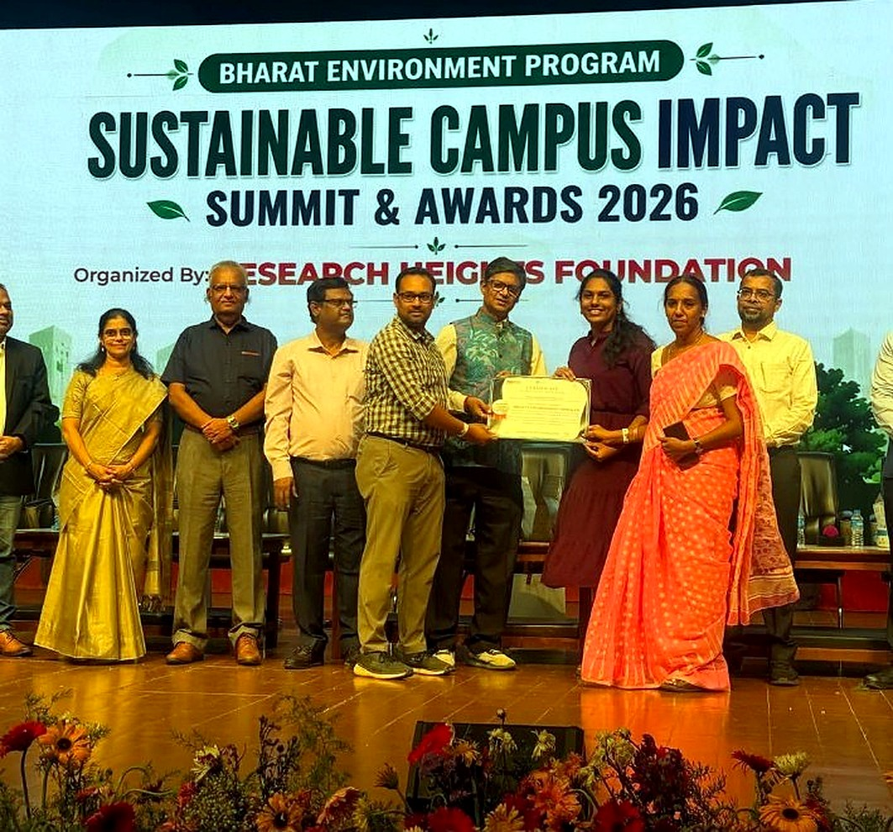

01 July · 2026
A Step towards Healthier Community
Blood Donation & Eye Check-Up Camp conducted in collaboration with MSN Voluntary Organisation and Nirmaan, with volunteers, healthcare professionals and donors.
Field notes
A visual, concise record of recent NSS BITS Pilani Hyderabad Campus activities represented in the supplied event material.
Blood Donation & Eye Check-Up Camp conducted in collaboration with MSN Voluntary Organisation and Nirmaan, with volunteers, healthcare professionals and donors.

NSS volunteers spent Independence Day with the students of MPPS Pothaipally, sharing smiles, learning together and celebrating unity and hope.

A cleanliness drive under the “Swachhata Hi Seva - 2025” initiative, supported by the campus administration.

BITS Pilani Hyderabad Campus received Platinum Sustainable Campus Partner recognition at the Sustainable Campus Impact Summit & Awards 2026.
The thread
Health, environment, education, gratitude and sustainability are different expressions of the same NSS spirit.